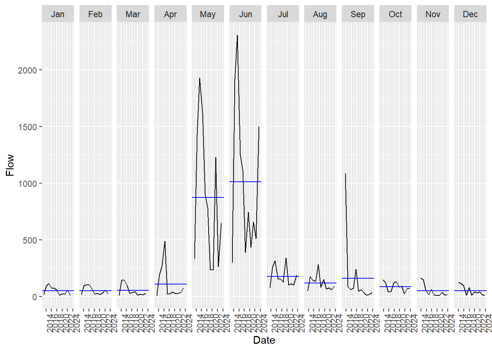

Warning: package 'plotly' was built under R version 4.4.3
Attaching package: 'plotly'
The following object is masked from 'package:ggplot2':
last_plot
The following object is masked from 'package:stats':
filter
The following object is masked from 'package:graphics':
layout
p <-ggplot(poudre_ts, aes(x = Date, y = Flow)) +geom_line(color ="orchid") +labs(title ="Cache la Poudre River Monthly Average Flow",y ="Flow (cfs)",x ="Date") +theme_minimal()ggplotly(p)
library(feasts)
Warning: package 'feasts' was built under R version 4.4.3
Loading required package: fabletools
Warning: package 'fabletools' was built under R version 4.4.3
gg_subseries(poudre_ts, Flow)

Based on the above subseries plot, it shows that the highest flow occurs consistently in May and June, showing a strong seasonal cycle — likely spring snowmelt. May and June also show the highest variability across years, with some years spiking way above average. Low flows dominate in the winter months from November to February. The rest of the year shows relatively stable and low flow, especially in late summer and fall.
Seasons are defined by calendar months. Each vertical facet represents a single month, and within each, the black lines show streamflow over different years.
In the subseries, each line in a panel represents the streamflow data for that month in a particular year. The blue horizontal line represents the average flow for that month across all years.
The STL decomposition plot for the Cache la Poudre River streamflow data breaks the flow into three clear components.
Trend component:
The trend shows an increase in baseline flow from 2014 until reaching a peak around 2016-2017, followed by a decline until about 2020, and then a slight stabilization or modest increase toward 2024. This long-term pattern likely represents multi-year climate cycles affecting watershed, such as drought periods, changes in snowpack accumulation, or possibly human-controlled factors like reservoir management or water usage patterns in the region.
Seasonal component:
The seasonal pattern shows consistent annual peaks that occur with remarkable regularity. These peaks represent the seasonal runoff cycle of the river, with the highest flows typically occurring during spring and early summer when mountain snowpack melts. The consistency in the seasonal pattern indicates the rivers predictable annual hydrologic regime, though the amplitude remains fairly stable throughout the period.
Remainder component:
The remainder (residual) shows irregular fluctuations now explained by the trend or seasonal patterns. These variations likely represent specific weather events like rainstorms, rapid snowmelt events, or upstream releases that cause short-term changes in flow beyond the expected seasonal patterns.
The original flow data combines all these elements, showing how the river experiences both predictable seasonal changes and longer-term variations in its baseline flow. Understanding these components is valuable for water resource management, ecological assessment, and flood forecasting in the Cache la Poudre watershed.